Conjunto de bacterias en un ambiente.
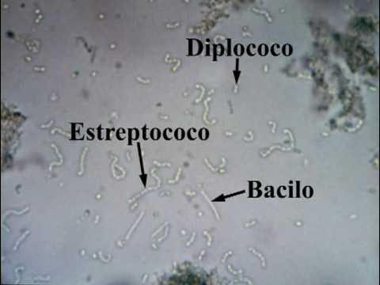Diferentes tipos de bacterias: Estreptococo, Diplococo y Bacilo.
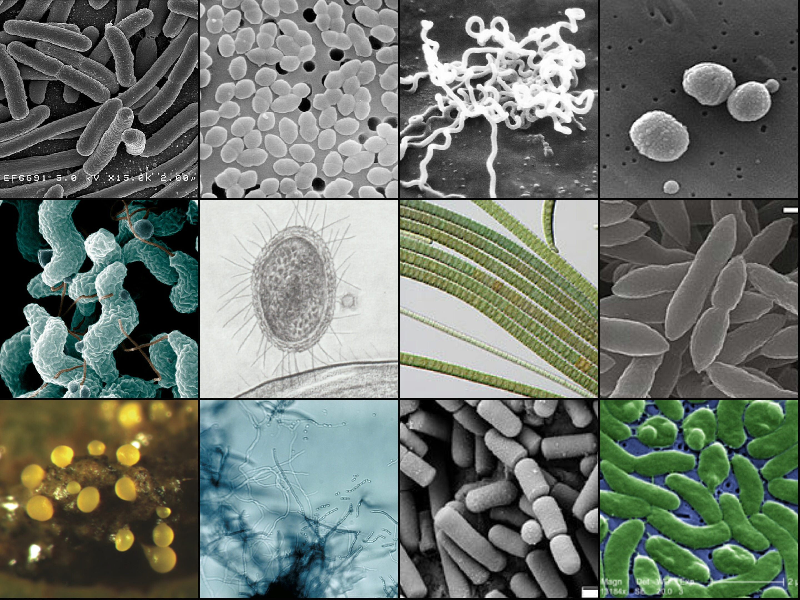De la izquierda superior a la derecha inferior.
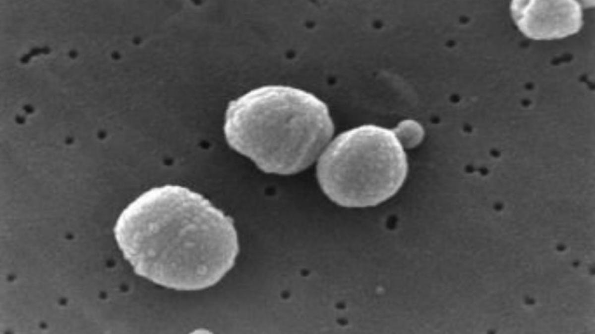Bacterias (puntos negros) junto cuatro piezas de algodón (puntos blancos).
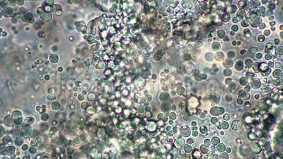Conjunto de bacterias en un ambiente.
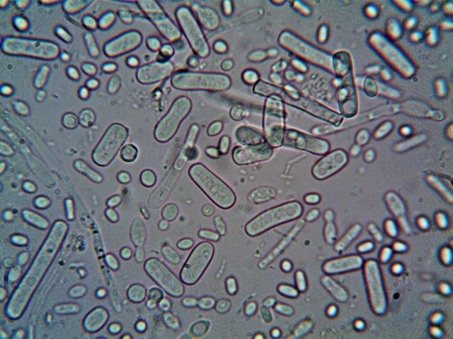Bacterias bajo un microscopio.
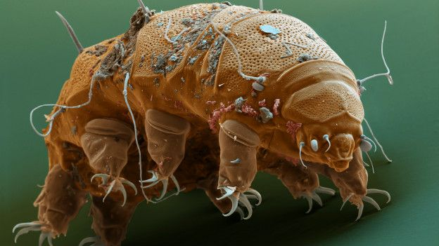Un tardígrado.
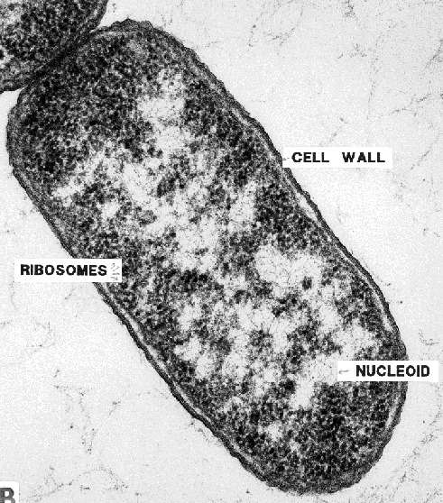Una bacteria bajo un microscopio con zoom al 1000x.
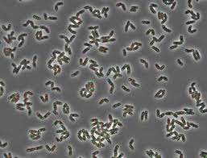Conjunto de bacterias en un ambiente.
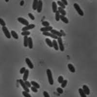Bacterias bajo un microscopio.
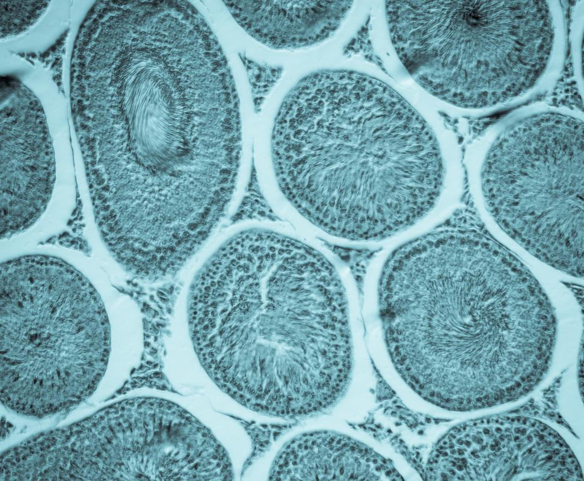Células bajo un microscopio.
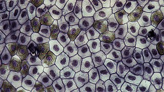Glóbulos blancos bajo un microscopio.
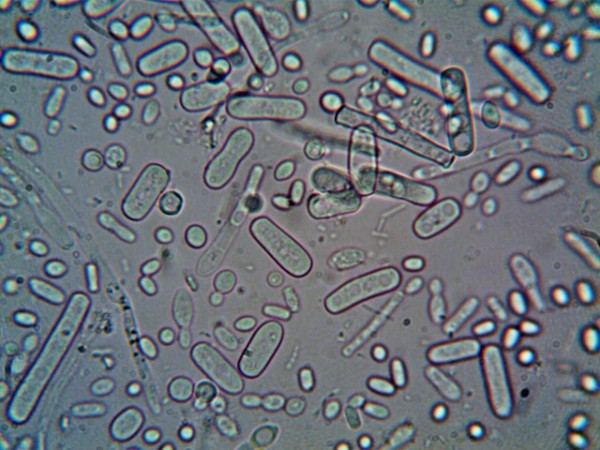Bacterias bajo un microscopio.
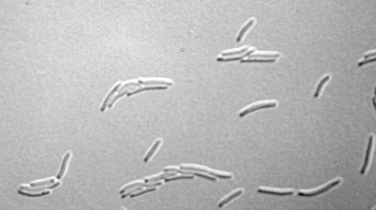Bacterias en un ecosistema bajo un microscopio.
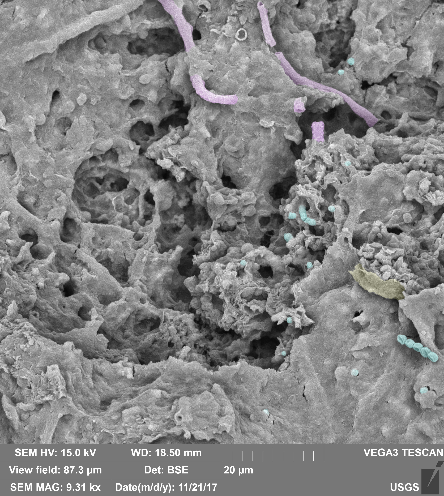Bacterias al lado de una piedra.
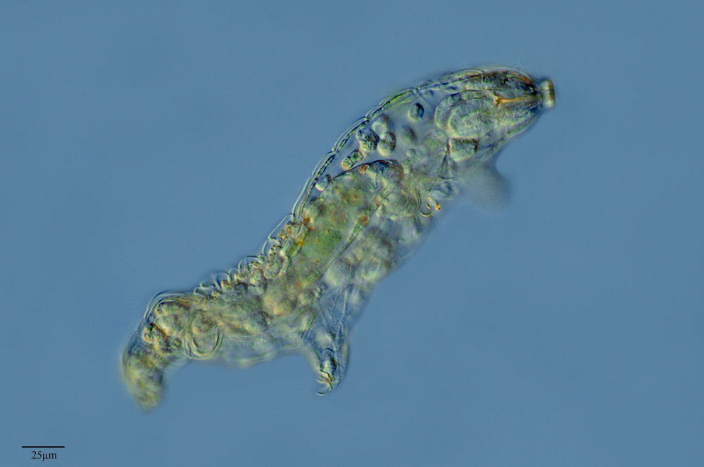Tardígrado real bajo un microscopio.